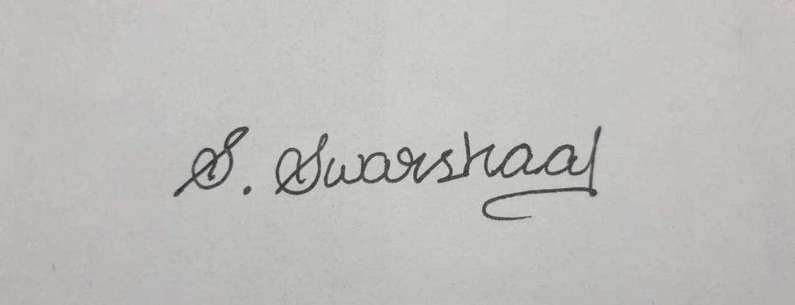

A highly organised and hard working individual seeking a entry level position or internship to begin my career in highly professional environment.
B.E.Electronics and communication engineering(ongoing): 8.31
Java,Python,C,HTML,CSS,Javascript,Angular,Linux os,ROS Leadership,Event management,Time management
Mysql,Oracle,Simpro 16.0,Gazebo,Rviz OOPS,Data structures and algorithms
,chennai institute of technology
Designed solutions for 800+ problems
, cyborg automata club
Conducted and organised several workshops on robotics and image processing representing cyborg automata club.
, Replicated a feature of autonomous/self driving cars
Integrated Mysql and python using mysql connector
I hereby declare the above mentioned datas are true to the best of my knowledge.
